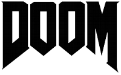
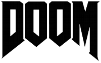

 LOS JUEGAZOS NEXT-GEN 2016
LOS JUEGAZOS NEXT-GEN 2016
Ficha técnica
Plataforma: Xbox One, PS4 y PC
Desarrollador: FromSoftware
Distribuidor: Bandai Namco
Género: Rol y Action RPG
Lanzamiento: Abril 2016
Sinopsis
Tercera entrega de la saga Dark Souls ahora en exclusiva para las consolas de nueva generación y PC. Tras el estreno de Bloodborne en PlayStation 4 ahora le toca el turno a la saga souls con su nueva entrega Dark Souls III. Miyazaki vuelve una vez más con una nueva entrega que promete ser igual de difícil que el juego original y en el que tendremos que parar de una vez por todas la maldición del no-muerto.
Autor: Julián Andrés Dabán Viloria Copyright All Rights Reserved 2015-2016